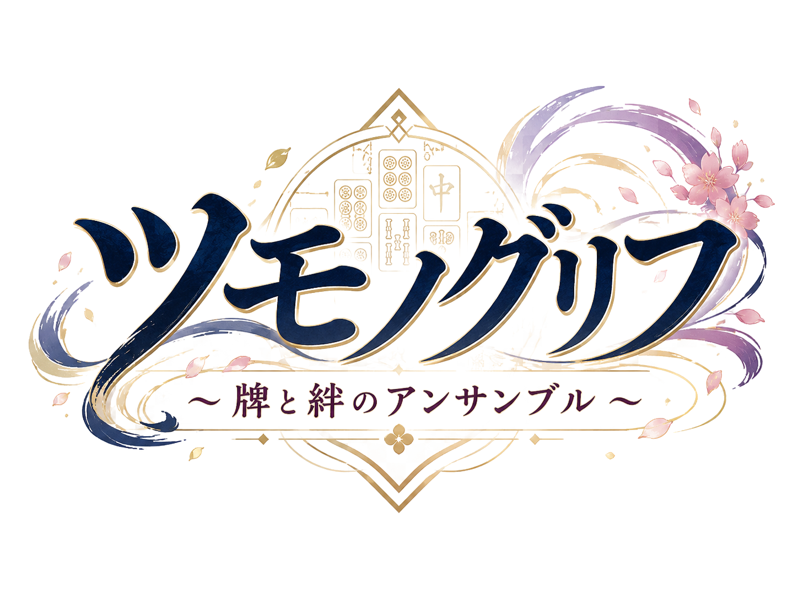

読み込み中…
※ 現在のロゴはAI生成を使用した仮組みです。本リリース時にデザイナー作成のものへ差し替えます。
点棒がHP、相棒と挑む“共闘”の麻雀。まずは対戦ホームへ。
合言葉のルーム戦か、おまかせマッチング。空席は CPU が補う。
※ 自分以外の席はおまかせ（ランダム）。次の「キャラ」で相手を指名することもできます。
4席を2ペアで分け合います。席は対面どうしが相方。2人の合計点で勝負し、片方が飛んでも相方が単騎で続行します。
※ 次のステップであなたと相方1人を選んでください（相方はおまかせ可）。相手ペアはランダムで決まります。
※ 次のステップで自チームのメンバー3人を選んでください。相手チームはランダムで決まります。